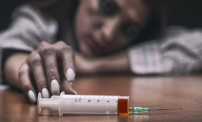

Conceptos Básicos
Definición: Es una enfermedad crónica del cerebro caracterizada por la búsqueda y el consumo compulsivo de sustancias a pesar de sus consecuencias nocivas.
Dependencia: El organismo se adapta a la sustancia, requiriendo dosis mayores (tolerancia) y manifestando malestar físico y psicológico si se interrumpe su consumo (síndrome de abstinencia).
Impacto: Afecta los circuitos cerebrales del bienestar, la motivación, el control de los impulsos y la memoria.
Naturaleza: No es una falta de fuerza de voluntad, sino un problema de salud complejo que requiere intervención profesional.

Elementos que influyen en el desarrollo de adicciones
Para comprender la vulnerabilidad hacia las sustancias, se deben considerar los siguientes factores determinantes:Genética: La composición biológica de una persona puede explicar una parte de su susceptibilidad a la adicción.Entorno: La influencia familiar, el abuso o la negligencia en la infancia, la presión social de los pares y el fácil acceso a las drogas incrementan el riesgo significantly.Salud mental: Trastornos subyacentes como la depresión, la ansiedad o el trastorno por estrés postraumático aumentan la probabilidad de recurrir a sustancias como automedicación.Edad de inicio: El consumo temprano durante la adolescencia, etapa en la que el cerebro aún se está desarrollando, eleva notablemente el riesgo de padecer adicciones en la edad adulta.
Estrategias de intervención: Las intervenciones tempranas en ámbitos familiares, escolares y comunitarios son fundamentales para educar sobre los riesgos y fortalecer las habilidades de resistencia al consumo. Enfoque terapéutico: El tratamiento efectivo suele incluir terapia conductual, apoyo psicológico, asistencia médica y, en algunos casos, medicamentos específicos para estabilizar las funciones cerebrales. Redes de apoyo: El acompañamiento cercano de la familia, amigos y grupos de ayuda mutua resulta indispensable para sostener el proceso de recuperación a largo plazo. Recuperación: Con el tratamiento integral adecuado y la rehabilitación, es posible superar la dependencia, reestructurar la vida cotidiana y lograr un bienestar duradero.